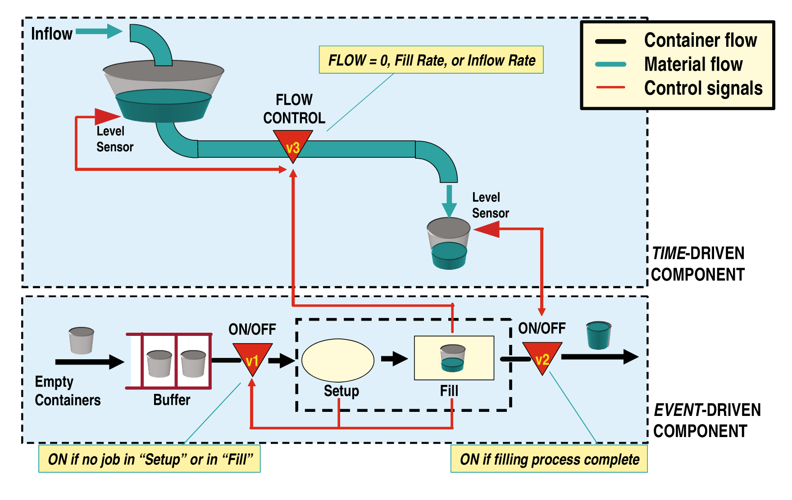

What is a hybrid system?
Definition of a hybrid system
The adjective “hybrid” is used in a common language to express that the subject under consideration has a bit of this and a bit of that… When talking about hybridness of systems, we modify this vague “definition” into a more descriptive one: a hybrid system has a bit of this and an atom of that… By this bon mot we mean that hybrid systems contain some physical subsystems and components combined with if-then-else and/or timing rules that are mostly (but not always) implemented in software. This definition is certainly not the most precise one, but it is a good starting point.
Even better a definition is that hybrid systems are composed of subsystems whose evolution is driven by time (discrete or continuous) and some other subsystems that evolve as dictated by (discrete) events. The former are modelled by ordinary differential equations (ODE) or differential-algebraic equations (DAE) in continuous time cases and by difference equations in the discrete time cases. The are latter are modelled by state automata or Petri nets, and they implement some propositonal (aka sentential or statement), predicate and/or temporal logics. Let’s stick to this definition of hybrid systems. As we will progress with modelling frameworks, the definition will become a bit more operational.
It may be a bit confusing that we are introducing a new framework for the situation that we can already handle – a physical plant evolving in continuous time (and modelled by an ODE) controlled in discrete-time by a digital controller/computer. Indeed, this situation does qualify as a hybrid system. In introductory course we have learnt to design such controllers (by discretizing the system and then designing a controller for a discrete-time model, relying on ) and there was no need to introduce whatever new framework. However, this standard scenario assumes that the sampling period is constant. Only then can the standard techniques based on z-transform be applied. As soon as the sampling period is not constant, we need some more general framework – the framework of hybrid systems.
Recently systems containing both the computer/software/algorithmic parts and physical parts are also studied under the fancy name cyberphysical systems. The two concepts can hardly be distinguished, to be honest. I also confess I am unhappy with the narrowing of the concept of cybernetics to just computers. Cybernetics, as introduced by Norbert Wiener, already encompasses physical and biological systems among others. Anyway, that is how it is and the take-away leeson is that these days a great deal of material relevant for our course on hybrid systems can also be found in resources adopting the name cyberphysical systems.
Example of a hybrid system

Hybrid system is an open and unbounded concept
Partly because hybrid systems are investigated by many
- Computer science
- Modeling & simulation
- Control systems
Hybrid systems in computer science
- They start with discrete-event systems, typically modelled by finite state automata and/or timed automata, and add some (typically simple) continuous-time dynamics.
- Mainly motivated by analysis (verification, model checking, …): safety, liveness, fairness, …
Hybrid systems in modeling and simulation
- Even when modeling purely physical systems, it can be beneficial to approximate some fast dynamics with discontinuous transitions – jumps (diodes and other semiconductor switches, computer networks, mechanical impacts, …).
- Strictly speaking, we should speak about hybrid models, because modeling a given system as hybrid is already a modeller’s decision. But the terminology is already settled…
Hybrid systems in control systems
- Typically focused on continuous-time dynamical systems to be controlled but introducing some logic through a controller (switching control, relay control, PLC, …)
- Besides synthesis (aka control design), properties such as stability, controllability, robustness.
- There is yet another motivation for explicitly dealing with hybridness in control systems: some systems can only be stabilized by switching and switching can be formulated within the hybrid system framework.